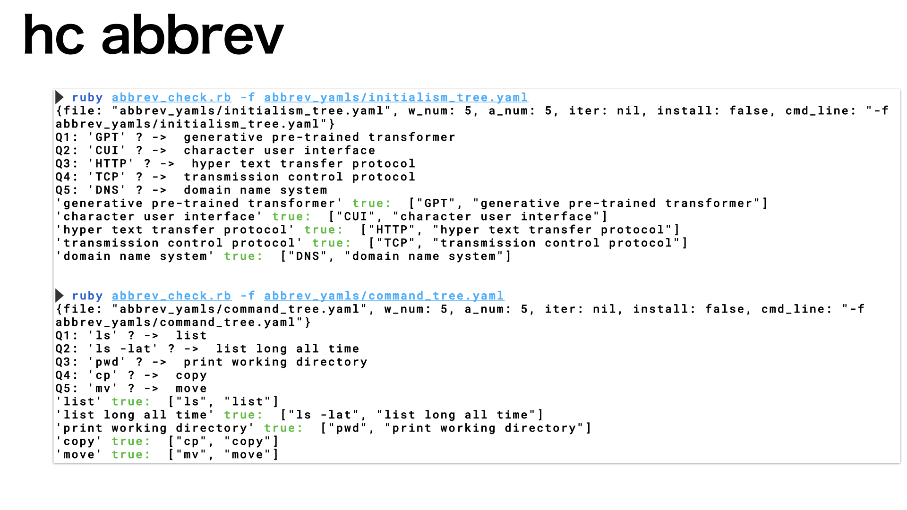
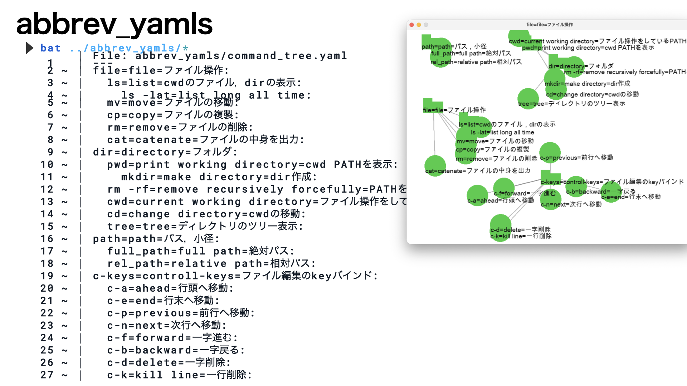

hc abbrevの使い方
Table of Contents
1. name
- 'hc abbrev'はプログラミングで頻出するabbreviation(短縮形)の buildingを行うclaです．
- 短縮形になっているwordのfull spellを打ち込んでください．
- 'hc check'を少し拡張しただけです．
2. install
> sudo gem install mk_semi_lattice # install mk_sl and hc > hc abbrev --install # install abbrev_yamls > cd abbrev_yamls
3. help
> hc abbrev -h
Usage: hc check [options]
-f, --file FILE YAML file to use
-a, --answer NUM # not used
-q, --quiz NUM Number of quiz(def 5)
-i, --iterative [NUM] Test iteratively (num=2)
--install Install sample check data
4. usage
|  |
| Fig.1 hc abbrevの動作. |
5. dir_tree.yaml編集
|  |
| Fig.2 dir_tree.yamlのフォーマット. |
Answers-Quizはdir_tree.yamlから取り出しています． 自分の進捗に合わせて編集していってください． 消してしまわずに'#'でコメントアウトするのが正しいやり方．
さらに，
> hc stack
でバックアップをとって変えていくのがコツです． stackの解説を参照ください．